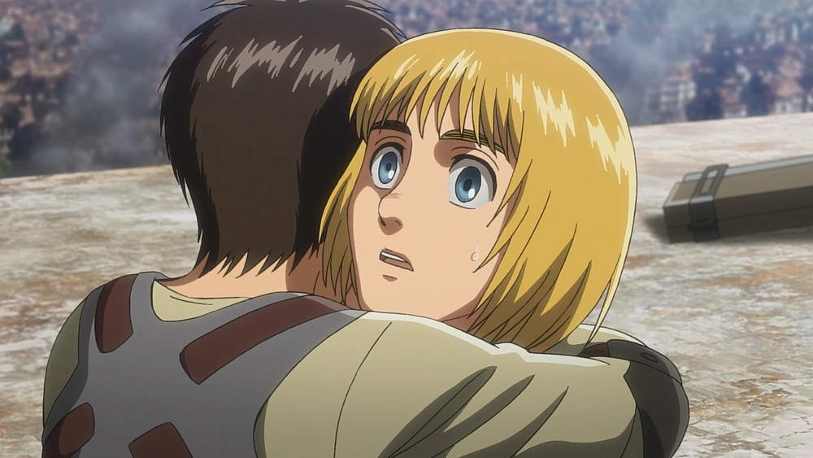

Falco Inherits the Attack Titan

My only real piece of evidence for this is that at the start of Season 4 Part 1, he has some sort of flashback to swinging around (presumably in ODM gear). The way his flashback is presented is very similar to how Eren receives his very first vision way back at the start of the show, before he ever became a titan. After last weeks episode, we not only know that holders of a titan retain the memories of all the previous holders of that titan, but also the Attack titan can also see into the future.
The way seeing into the future works is a bit complicated, but in short, the previous holder of the Attack titan was Erens father, Grisha, who would see into the future via Eren, who sent select memories back to his father from the future. The current holder of the Attack titan picks and chooses which memories the previous holder can see. If Falco receives the Attack titan after Eren, in theory, he could manipulate Erens decisions by selectively choosing what Eren does and does not see from the future. However, Falco received the Jaw titan, so Im not really sure how plausible this theory is anymore, but its AOT, and crazier things have happened. Author: Cece Ochoa, February 4th 2022
Probability of Each Character Getting the Attack Titan Power
| Falco |
Jean |
Armin |
| 6 |
7 |
10 |
| 2 |
4 |
5 |
| 1 |
0 |
3 |
Armin is the Sole Survivor and Eren is Possessed

When I say that Armin is the sole survivor, I mean the sole survivor of the core group. My major piece of evidence for this theory is that Armin has been narrating a majority of the show, especially in the introduction and previews. It would make sense that this show is his way of retelling the events that took place, either through a book or some other form of storytelling.
This idea goes along with theory 3. If Eren or Ymir can rid the world of titans, then I think Armin would no longer be locked into the whole 13 years left to live clause that comes with inheriting a titanl, meaning he could live a long enough life to spread their story.
Please keep in mind that these are all my 3 a.m. theories and probably wont happen, but either way I am so excited to see how this show will end.
Okay, admittedly, my evidence for this is in constant flux, and maybe its me refusing to believe the kid we see in Season 1 ends up being like THAT in Season 4. But just hear me out. Theres a lot of religious symbolism in the show, which, in my opinion, hasnt been explored enough yet.
The religious symbols coupled with calling the Eldians in Paradis devils leads me to believe Ymir (or some other entity) is actually possessing Eren. We know Ymir is the “founder,” and is a godlike figure in their world, but we are never told explicitly that she is a good deity, leaving the door open for possession to occur. Author: Cece Ochoa, February 4th 2022